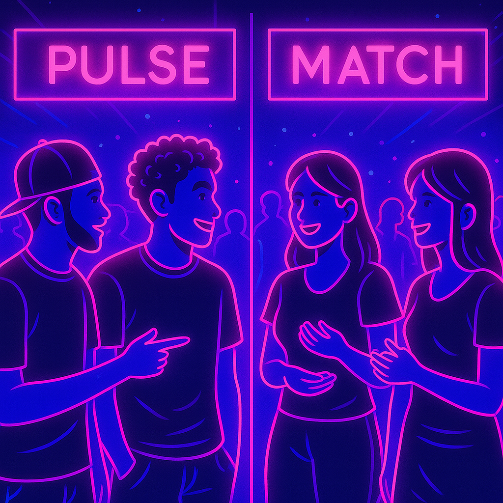
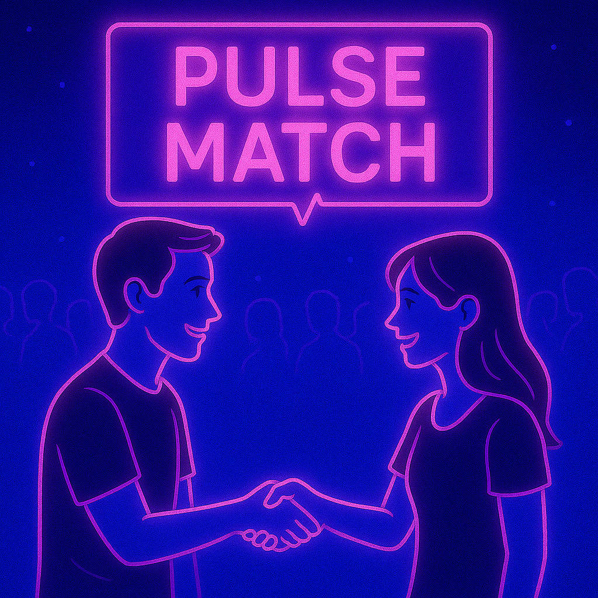
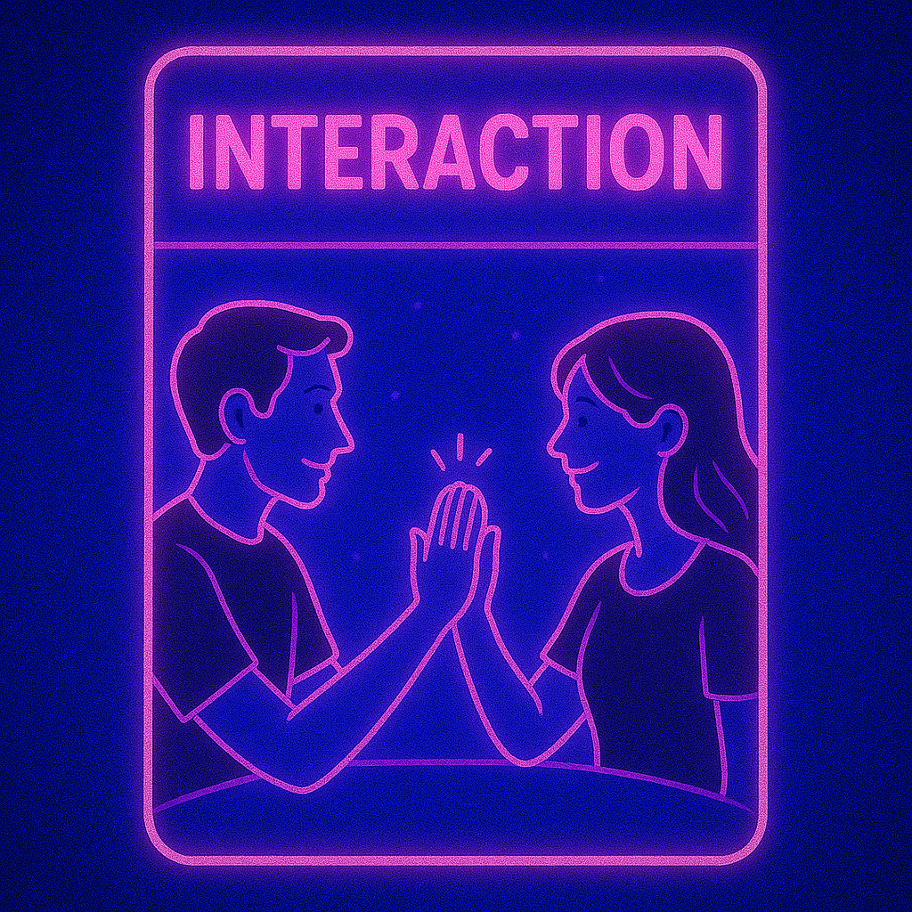
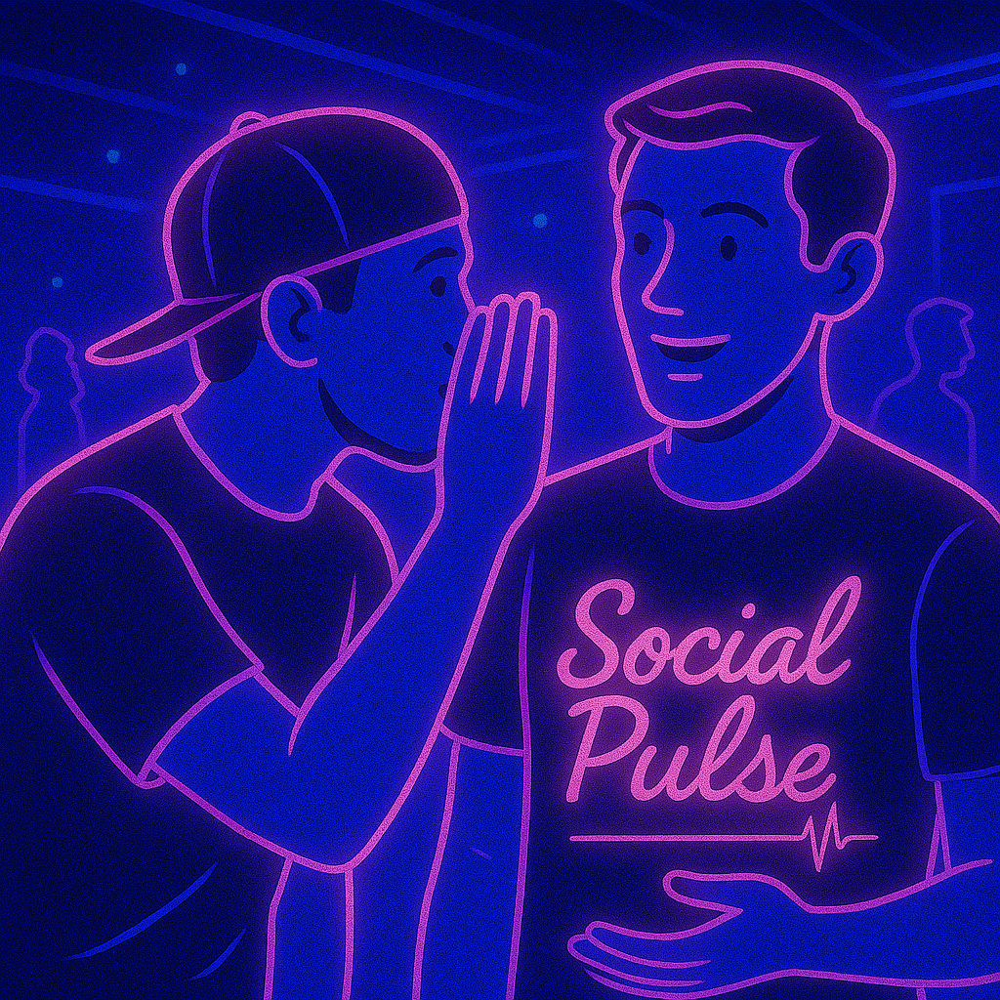
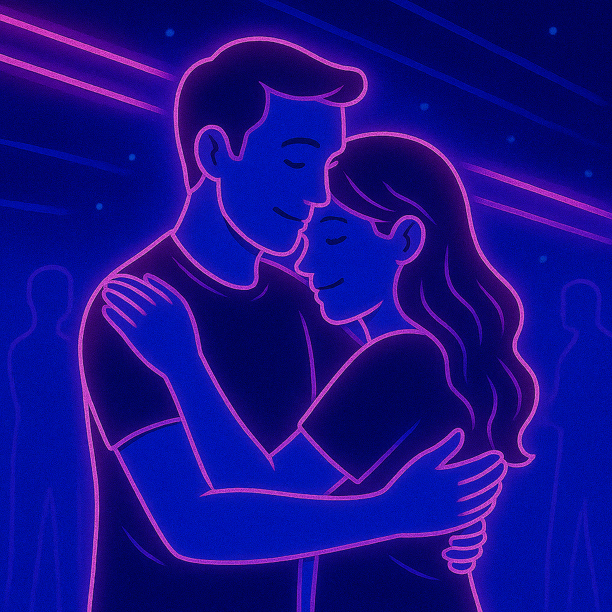
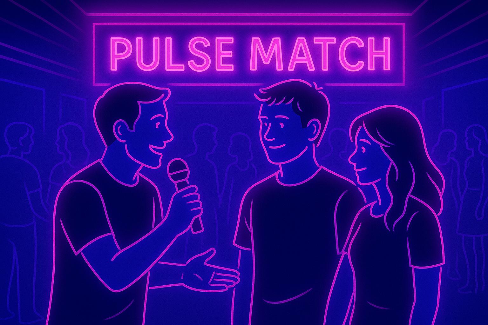
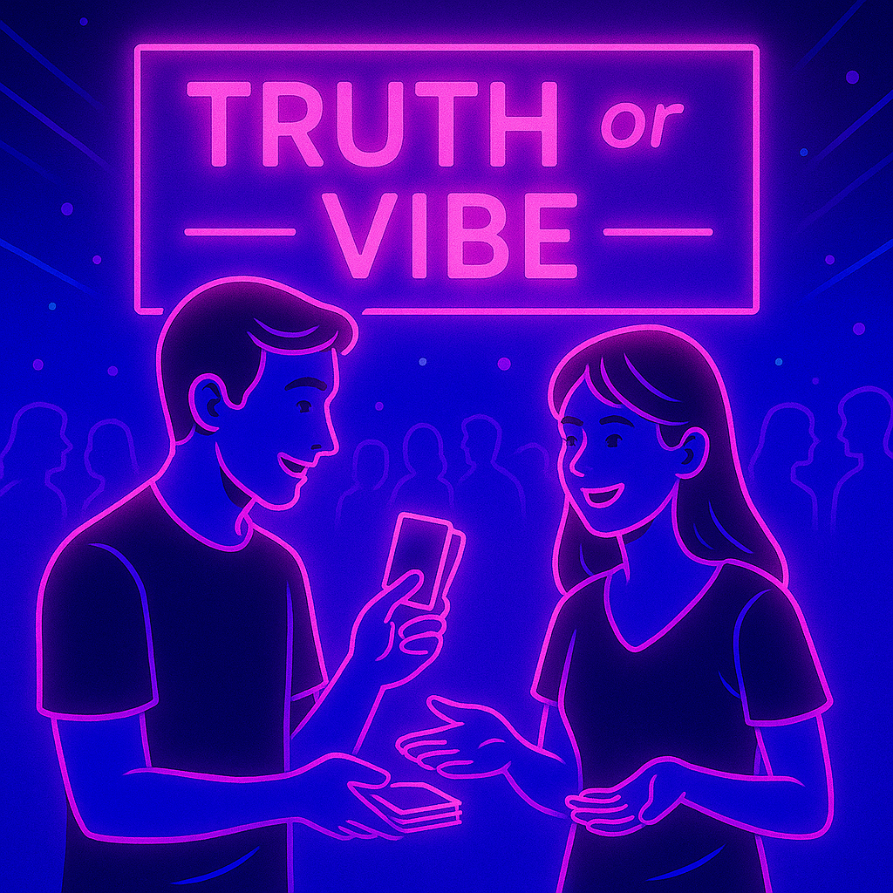
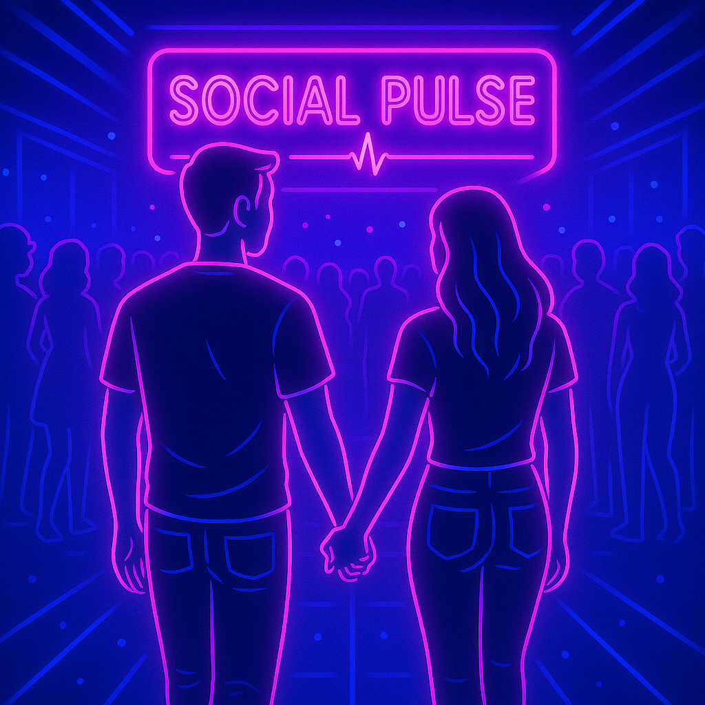
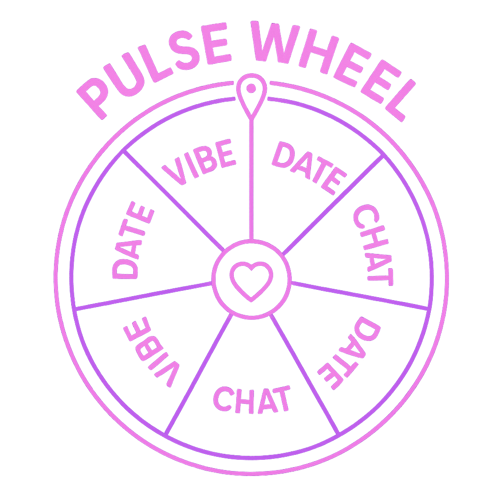

🔮 Welcome to Social Pulse 🔮
Vivi l'esperienza che trasforma un incontro in connessione. Un evento reale, interattivo, dove stile e relazioni
si accendono a ogni battito. ✨
Pulse Experience
🔁 Fase 1: Pulse Match (Scoperta)
-
Partecipanti divisi in 2 gruppi

-
Ad ogni turno si forma una "coppia"

-
Ogni coppia pesca una carta "Interaction" e completa una micro-interazione

-
Alla fine, ogni partecipante indica al conduttore con chi ha sentito il Pulse senza dirlo al pubblico.

📌 Questa fase genera:
- Prima impressione
- Momentum
- Coinvolgimento senza paura
🔁 Fase 2: Pulse Connect (Decisione & Azione)
-
Si raccolgono i dati dei match reciprocamente percepiti

-
L’host entra in scena per creare show facendo domande, aiutare nelle scelte dei partecipanti e
intrattenendo il pubblico.

-
I match estraggono una carta “Truth or vibe” per completare l’interazione.

-
Continuate la serata con il partner o da soli

📌 In questa fase:
- Si trovano potenziali partner
- Domande Truth & Vibes che stimolano interazione profonda/leggera
⚠️
Non hai trovato il tuo match?
Ottieni un Token Seconda Chance da usare alla PULSE WHEEL!

Potrai vincere Gadgets, Shots, Drinks, Bottiglie e prodotti dei nostri sponsor! 🎁
Ricorda di completare le varie Side Quests per vincere premi e conoscere più persone possibili🎉